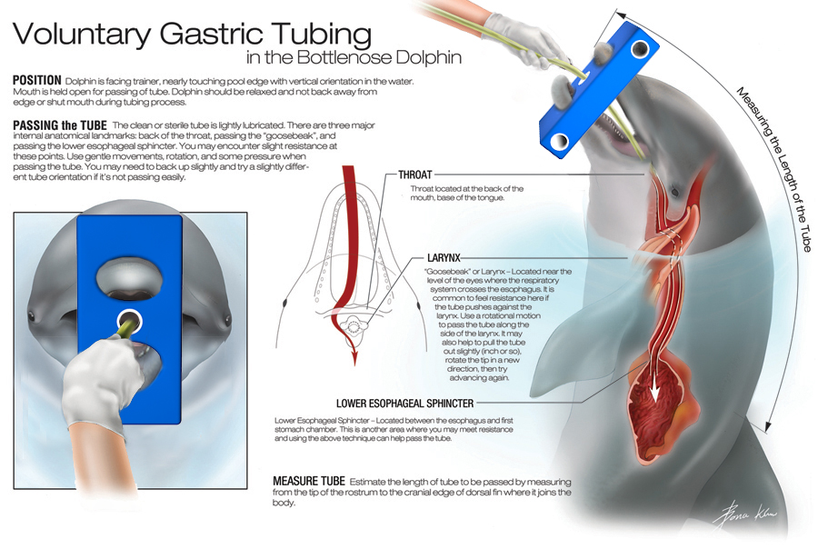

Marine Harness Product Page
What is this site?
A simple demonstration page for a product I developed for waveSurface. I wanted a simple way to communicate what the product was with the goal of keeping the content to an easily digestible single page. I love how apple uses scrolls effectively to tell their product stories in a visual way and wanted something with a similar feel. I modeled a C4D animation to serve as the focal point of the presentation and encourage engagement. I photoshopped the harness into an existing infographic to capture the full usage context. All front end html/css was designed in Webflow. A checkout page was accomplished via a stipe checkout link. The page is hosted on netlify via GitHub integration.
